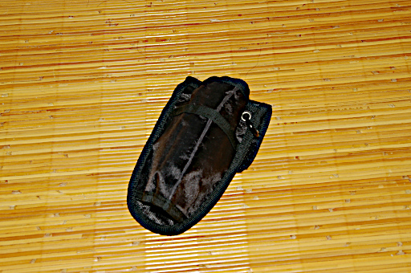
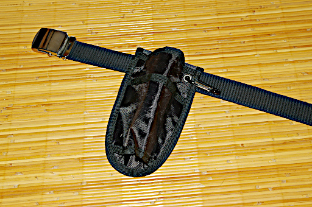
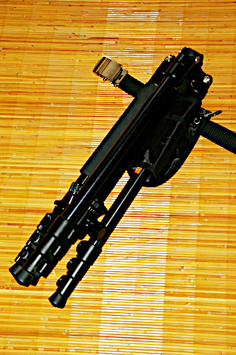

ただし国土地理院の地図などコンテンツの一部は除きます。
ただし国土地理院の地図などコンテンツの一部は除きます。以前パラコードを使って三脚を運搬するといいのではないかという記事を書きました。実はそれを実地テストする前に以下のような製品を AliExpress でポチりました。

一脚ホルスターです。AliExpress で 440 円でした。
下の写真のようにズボンのベルトに取り付けて使います。

なんで一脚用？と思う人いますよね？きっと。一脚用であっても下の写真のように三脚の脚 1 本だけ突っ込めば普通に三脚でも使えるんです。

ちなみに我が家にある manfrotto の一脚は入りませんでした。一脚のロックがレバーロックでレバーが邪魔で入らないんですね。ナットロックだったら入っていたかもしれません。ナットロックの一脚を持ってないので試しようがないですが。
で肝心の使い心地ですが、これはダメです。ダメな理由を列挙します。
そういうわけで 1 度使っただけでお蔵入りすることになりました。
これと同じような製品が Gitzo からでているのですが、とはいっても Gitzo の方は三脚用ですが、やはり腰のベルトにつけるタイプです。同じ理由でダメな製品だと思います。しかも定価が 5832 円と高価ですし amazon では 14956 円などという法外な値段で売られていたりします。
使いにくい上に周囲に迷惑をかけ、さらにとんでもなく高価。やめておいた方が賢明です。
それでは以前私が記事にしたパラコードによる三脚運搬システムはどうなんだと言われると……
はっきり言って最高でした。
はっきり言ってパラコードを使った三脚運搬システム最高ですよ。パラコードだから見た目もそんなに悪くないですし。
ただこのパラコード三脚運搬システムを使えない場面がひとつだけあります。それは山岳写真での三脚の運搬です。
山ではザック等をぶつけただけで転倒・滑落してしまうような場所がそこらじゅうにあります。そんなところで三脚を腰にぶら下げるなんて危険以外のなにものでもありません。そんな場所では山岳用ポールがかえって危険なのと一緒です。山での移動中は面倒でも三脚はちゃんとザック等に片付けましょう。
ただし国土地理院の地図などコンテンツの一部は除きます。